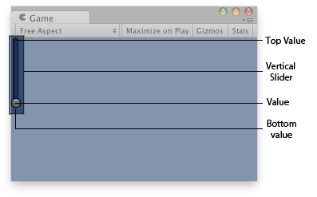

GUILayout.VerticalSlider
Parameters
| value | The value the slider shows. This determines the position of the draggable thumb. | |
| topValue | The value at the top end of the slider. | |
| bottomValue | The value at the bottom end of the slider. | |
| slider | The GUIStyle to use for displaying the dragging area. If left out, the horizontalSlider style from the current GUISkin is used. | |
| thumb | The GUIStyle to use for displaying draggable thumb. If left out, the horizontalSliderThumb style from the current GUISkin is used. | |
| options | An optional list of layout options that specify extra layouting properties. Any values passed in here will override settings defined by the style. |
Returns
float The value that has been set by the user.
Description 描述
A vertical slider the user can drag to change a value between a min and a max.

Vertical slider in the Game View.
using UnityEngine;
public class ExampleScript : MonoBehaviour { // Draws a vertical slider control that goes from 10 (top) to 0 (bottom) float vSliderValue = 0.0f;
void OnGUI() { vSliderValue = GUILayout.VerticalSlider(vSliderValue, 10.0f, 0.0f); } }